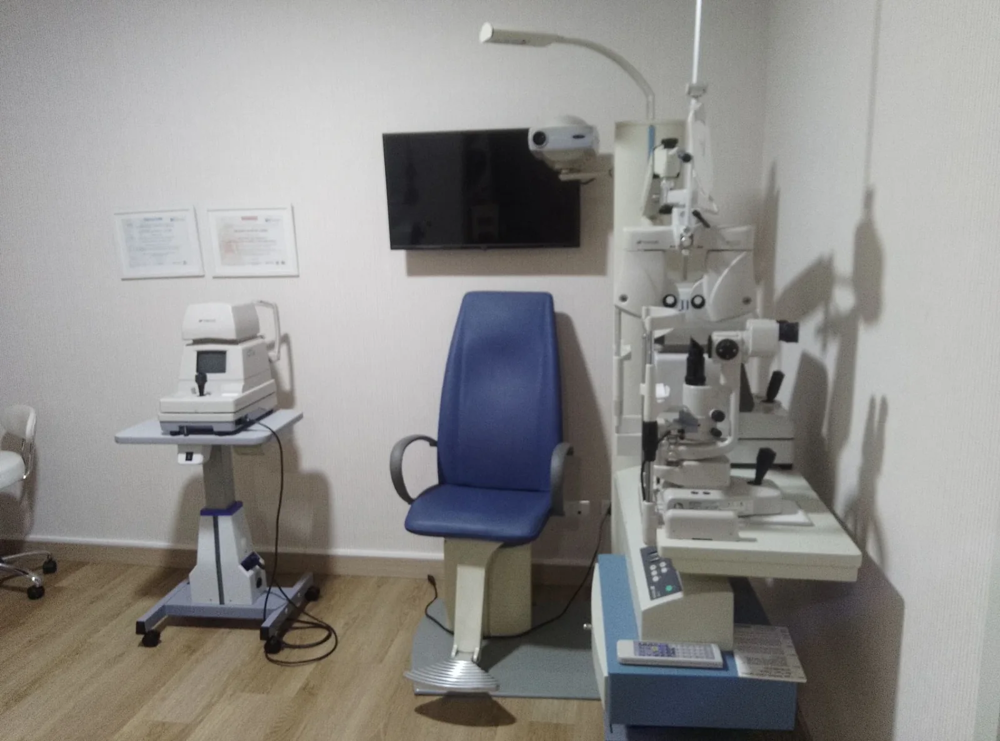

Qué son exactamente
El interior del ojo está relleno de un gel transparente, el humor vítreo. Con los años ese gel deja de ser uniforme: algunas zonas se licúan y otras se condensan en pequeñas fibras o grumos. Cuando la luz entra en el ojo, esas condensaciones proyectan una sombra sobre la retina, y eso es lo que ves: una mosca, un hilo, un anillo o una telaraña.
Por eso se comportan como se comportan. Flotan dentro del gel, así que se desplazan un instante después de mover el ojo y se escapan cuando intentas fijarlas. Y se notan más con luz intensa y fondos claros, porque la sombra tiene más contraste.
Por qué aparecen
- La edad. Es la causa más común. A partir de los 50 o 60 años el vítreo se encoge y acaba separándose de la retina. Es lo que se llama desprendimiento posterior de vítreo: un proceso normal que suele anunciarse con una mosca nueva, a menudo grande y en forma de anillo, que aparece de un día para otro.
- La miopía. En los ojos miopes el vítreo envejece antes, así que las moscas aparecen más pronto, a veces a los 20 o 30 años, y son más numerosas.
- Después de una operación de cataratas o de un golpe en el ojo.
- Inflamaciones o pequeñas hemorragias dentro del ojo, por ejemplo en personas con diabetes. Son causas menos frecuentes, y por eso conviene que alguien mire el fondo del ojo cuando las moscas son nuevas.
Cuándo son normales
Si llevas tiempo con una o varias moscas que se mueven con la mirada, que no cambian de un día para otro y que no van acompañadas de nada más, lo más probable es que sean las condensaciones normales del vítreo. No dañan el ojo, no afectan a la graduación y, aunque al principio resulten muy molestas, con las semanas el cerebro aprende a ignorarlas y muchas se hunden fuera del eje de visión.
Las señales de alarma
Cuando el vítreo se separa de la retina, en una minoría de casos tira de ella y la rasga. Un desgarro de retina se trata con láser en consulta si se coge a tiempo; si no se trata, puede terminar en un desprendimiento de retina, que es una urgencia quirúrgica. Por eso estas señales piden oftalmólogo el mismo día, o urgencias si no hay consulta disponible:
- Muchas moscas nuevas de golpe, como una lluvia de puntos o de hollín.
- Destellos de luz, como relámpagos o flashes, sobre todo en el lateral del campo visual y más visibles con poca luz.
- Una sombra o cortina fija que tapa una parte de lo que ves y no se mueve con el ojo.
- Pérdida de visión brusca, aunque sea parcial.
Una sola mosca nueva sin destellos ni sombras no es una urgencia, pero sí motivo para que te revisen el fondo del ojo en los próximos días, sobre todo si eres miope o tienes más de 50 años.
Qué hacemos en la óptica
En la revisión fotografiamos el fondo del ojo con el retinógrafo y medimos la tensión ocular, y te preguntamos con detalle cómo y cuándo han aparecido las moscas. Si todo apunta a condensaciones normales del vítreo, te lo explicamos, guardamos las fotos para comparar en la siguiente revisión y te decimos a qué señales estar atento.
Si hay cualquier señal de alarma, o si las moscas son recientes y no podemos descartar un problema en la retina, te derivamos al oftalmólogo sin esperar. La retinografía muestra el centro de la retina; para explorar bien el borde, que es donde se producen los desgarros, hace falta que el oftalmólogo dilate la pupila. En esos casos no sustituimos esa consulta: la aceleramos.
Cómo convivir con ellas
- Mueve los ojos arriba y abajo, no de lado a lado: el gel se desplaza y la mosca suele salir del centro de la visión.
- Baja el contraste. Unas gafas de sol al aire libre y una pantalla sin el brillo al máximo las hacen mucho menos visibles.
- No las busques. Cuanto más las persigues, más las ve el cerebro. Con el tiempo deja de prestarles atención.
- Revisión anual con fondo de ojo si eres miope o tienes más de 50 años, aunque no notes cambios.
¿Tienen tratamiento?
En la inmensa mayoría de los casos no hace falta ninguno. Para las personas a las que una mosca grande les impide leer o trabajar existen dos opciones en manos del oftalmólogo: romperla con un láser especial o retirar el vítreo con cirugía. Las dos se reservan para casos muy concretos porque no están libres de riesgos. No hay gotas, vitaminas ni suplementos que hagan desaparecer las moscas, por mucho que se anuncien.
Lo que no es verdad
- No las causan las pantallas ni el cansancio. Delante de una pantalla clara simplemente se ven más.
- No se van frotando los ojos ni con lavados.
- No son un principio de ceguera. Lo que hay que vigilar no es la mosca, sino los destellos y las sombras fijas que a veces la acompañan.
En resumen
Las moscas volantes son sombras de pequeñas condensaciones del gel del ojo, muy frecuentes con la edad y en los miopes, y casi siempre inofensivas. Lo importante es distinguirlas de las señales de alarma: lluvia de puntos, destellos, una cortina fija o pérdida de visión piden oftalmólogo el mismo día. Ante una mosca nueva, ven a que te miremos el fondo del ojo: en unos minutos sabrás si es de las que se olvidan o de las que hay que mirar más a fondo.
¿Has notado moscas nuevas?
Pide cita y te revisamos el fondo del ojo. Si además ves destellos o una sombra fija, acude hoy mismo al oftalmólogo. C/ Marjaleta, 3, Moraira.